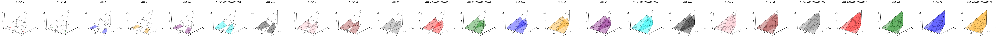
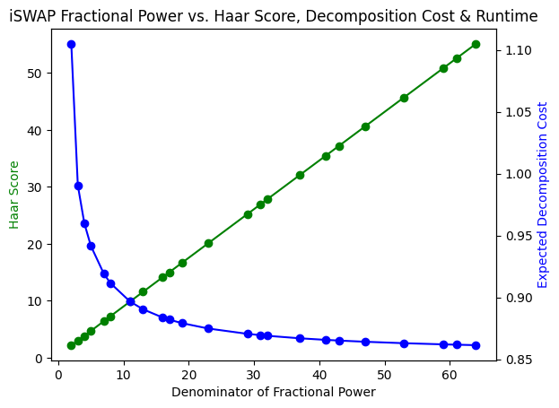
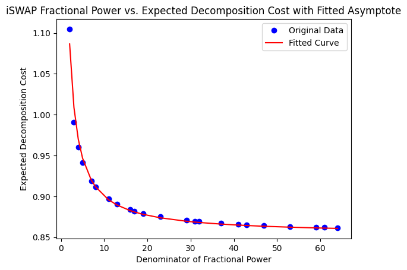
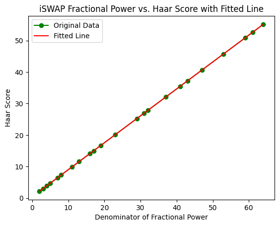
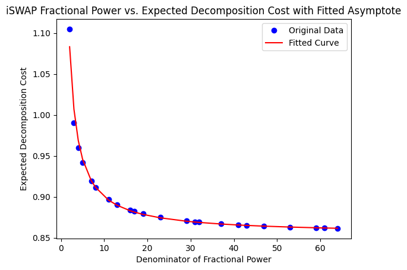

![]()
# !pip uninstall -y matplotlib && pip install matplotlib==3.7.2Testing Header Update !!!
Here is some info. Here is some more info.
Warning
Temp fix for matplotlib versioning.
Testing if citations work Gokhale et al. (2021). Looks like it works!
# define gateset as any basis with coordinates (x,y, 0)
# want to find set of 2 gates that give largest disjoint volume
from monodromy.haar import gates_to_haar, expected_cost
from monodromy.render import _plot_coverage_set
from monodromy.coverage import gates_to_coverage, print_coverage_set
from monodromy.haar import gates_to_haar, expected_cost
from monodromy.render import _plot_coverage_set
from monodromy.coverage import gates_to_coverage, print_coverage_set
import numpy as np
import matplotlib.pyplot as plt
from tqdm import tqdm
from qiskit.circuit.library import iSwapGate
import time# g = canonical_gate(*np.array([0.25, 0.25, 0])).full()
# g = UnitaryGate(g)
# g.name = "g"
# print(gates_to_haar(g))
# _ = gates_to_coverage_plot(g)gp = 1 / 4
g = iSwapGate().power(gp)
hp = 1 / 5
h = iSwapGate().power(hp)
gates = [(g, gp), (h, hp)]Making sure monodromy works for a basic example.
Test with a single gate compared to a basis with two basis gates.
# print(gates_to_haar(g, h))
coverage = gates_to_coverage(*[g], costs=[gp])
print(expected_cost(coverage))0.9598936659817359# print(gates_to_haar(g, h))
coverage = gates_to_coverage(*[g, h], costs=[gp, hp])
print(expected_cost(coverage))
# print_coverage_set(coverage)0.8787242759647856See Figure 1 to see the coverage set.
_plot_coverage_set(coverage)
Calculate asymptotic Haar score for iSWAP basis.
# Hardcoded list of denominators: powers of 2 and primes up to 64
denominators = [2, 4, 8, 16, 32, 64]
denominators += [
3,
5,
7,
11,
13,
17,
19,
23,
29,
31,
37,
41,
43,
47,
53,
59,
61,
]
fractional_powers = [1 / d for d in denominators]
# Lists to store results and runtimes
haar_scores = []
decomposition_costs = []
runtimes = []
for gp in tqdm(fractional_powers):
start_time = time.time()
# Create the iSWAP gate powered by the fractional power
g = iSwapGate().power(gp)
# Compute the Haar score
haar_score = gates_to_haar(g)
haar_scores.append(haar_score)
# Compute the expected decomposition cost
coverage = gates_to_coverage(g, costs=[gp])
cost = expected_cost(coverage)
decomposition_costs.append(cost)
end_time = time.time()
runtime = end_time - start_time
runtimes.append(runtime) 0%| | 0/23 [00:00<?, ?it/s]100%|██████████| 23/23 [28:07<00:00, 73.37s/it] # Plot the results
fig, ax1 = plt.subplots()
# Twin the axes for decomposition costs
ax2 = ax1.twinx()
# # Twin the axes again for runtimes
# ax3 = ax1.twinx()
# Move the last Y axis to the right
# ax3.spines["right"].set_position(("outward", 60))
# Plot Haar scores
ax1.plot(denominators, haar_scores, "g-o")
ax1.set_xlabel("Denominator of Fractional Power")
ax1.set_ylabel("Haar Score", color="g")
# Plot decomposition costs
ax2.plot(denominators, decomposition_costs, "b-o")
ax2.set_ylabel("Expected Decomposition Cost", color="b")
# # Plot runtimes
# ax3.plot(denominators, runtimes, "r--o")
# ax3.set_ylabel("Runtime (seconds)", color="r")
plt.title(
"iSWAP Fractional Power vs. Haar Score, Decomposition Cost & Runtime"
)
plt.show()
import numpy as np
from scipy.optimize import curve_fit
import matplotlib.pyplot as plt
# Define the reciprocal function
def reciprocal(x, a, b):
return a + b / x
# Fit the data using curve_fit
params, covariance = curve_fit(reciprocal, denominators, decomposition_costs)
# Extract the fitted parameters
a, b = params
# Generate the fitted curve using the extracted parameters
fitted_curve = [reciprocal(d, a, b) for d in denominators]
# Plot the original data and the fitted curve
plt.plot(denominators, decomposition_costs, "bo", label="Original Data")
plt.plot(denominators, fitted_curve, "r-", label="Fitted Curve")
plt.xlabel("Denominator of Fractional Power")
plt.ylabel("Expected Decomposition Cost")
plt.legend()
plt.title(
"iSWAP Fractional Power vs. Expected Decomposition Cost with Fitted Asymptote"
)
plt.show()
print(f"Asymptote (a): {a}")
Asymptote (a): 0.8533496992457048# Define the linear function
def linear(x, m, c):
return m * x + c
# Fit the data using curve_fit
params, _ = curve_fit(linear, denominators, haar_scores)
# Extract the fitted parameters
m, c = params
# Generate the fitted curve using the extracted parameters
fitted_curve = [linear(d, m, c) for d in denominators]
# Plot the original data and the fitted curve
plt.plot(denominators, haar_scores, "g-o", label="Original Data")
plt.plot(denominators, fitted_curve, "r-", label="Fitted Line")
plt.xlabel("Denominator of Fractional Power")
plt.ylabel("Haar Score")
plt.legend()
plt.title("iSWAP Fractional Power vs. Haar Score with Fitted Line")
plt.show()
print(f"Slope (m): {m}")
print(f"Intercept (c): {c}")
Slope (m): 0.8543795110777335
Intercept (c): 0.457798292267894# Extract the fitted parameters
a, b = m, c
# Generate the fitted curve using the extracted parameters
fitted_curve = [reciprocal(d, a, b) for d in denominators]
# Plot the original data and the fitted curve
plt.plot(denominators, decomposition_costs, "bo", label="Original Data")
plt.plot(denominators, fitted_curve, "r-", label="Fitted Curve")
plt.xlabel("Denominator of Fractional Power")
plt.ylabel("Expected Decomposition Cost")
plt.legend()
plt.title(
"iSWAP Fractional Power vs. Expected Decomposition Cost with Fitted Asymptote"
)
plt.show()
References
Gokhale, Pranav, Teague Tomesh, Martin Suchara, and Frederic T Chong. 2021. “Faster and More Reliable Quantum Swaps via Native Gates.” arXiv Preprint arXiv:2109.13199.